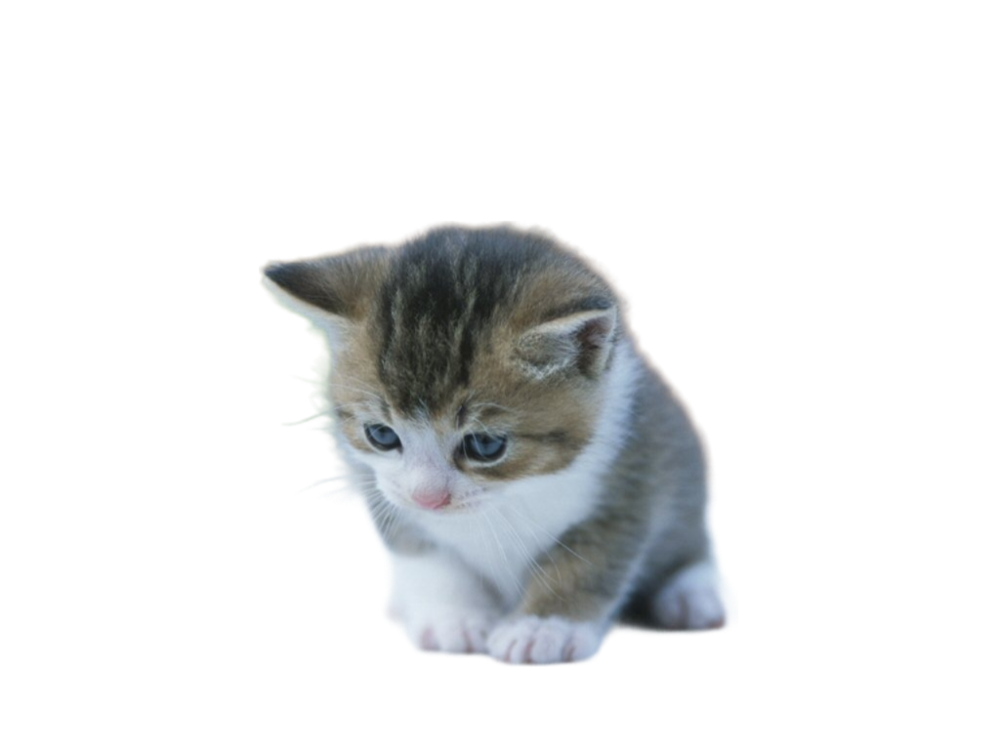

- ลูกแมวอายุต่ำกว่า 8 สัปดาห์ : หากคุณต้องรับเลี้ยงลูกแมวที่อยู่ในวัยนี้ ซึ่งเป็นวัยที่โดยปกติแล้วยังต้องอยู่กับแม่แมวและพี่น้องแมวตัวอื่น ๆ ในครอก ก่อนช่วงลูกแมวอายุ 1 นี้ร่างกายของลูกแมวจะยังปรับอุณหภูมิเองได้ไม่ดีนัก จึงควรเปิดไฟกกให้กับลูกแมวเพื่อเพิ่มความอบอุ่น มีการปูแผ่นรองนอน ไม่ให้บริเวณที่นอนเย็นเกินไป ป้อนนมทดแทนสำหรับลูกแมวโดยใช้ขวดนมสำหรับลูกแมวทุก ๆ 2 ชั่วโมง และใช้สำลีชุบน้ำเช็ดทำความสะอาด และกระตุ้นให้ลูกแมวขับถ่าย ที่สำคัญควรพาลูกแมวไปพบสัตวแพทย์เพื่อตรวจร่างกาย และถ่ายพยาธิ
- ลูกแมวอายุ 8-11 สัปดาห์ : เป็นช่วงที่ลูกแมวอายุ 1 เดือนแล้ว ซึ่งการเลี้ยงลูกแมวอายุ 1 เดือนขึ้นไปนี้จะเป็นระยะที่ลูกแมวเข้าสู่ช่วงหย่านมและเริ่มที่จะกินอาหารแสนอร่อย เจ้าของน้องแมวควรเลือกอาหารที่มีสารอาหารเข้มข้นให้พลังงานสูงเหมาะกับช่วงอายุของน้องแมววัยซน เช่น เพียวริน่า วัน อาหารแมวชนิดเม็ด เกรดซุปเปอร์พรีเมี่ยม สำหรับลูกแมวทุกสายพันธุ์ ที่มีโปรตีนสูง 40% ให้เหมาะกับลูกแมววัยกำลังเจริญเติบโต มี DHA สารที่พบในน้ำนมแม่ เพื่อพัฒนาการทางสมองและสายตา และทำจากเนื้อไก่และข้าว เพื่อให้ย่อยง่ายเหมาะสำหรับลูกแมว
- ลูกแมวอายุ 2 เดือน-4 เดือน : ช่วงอายุนี้ลูกแมวจะเติบโตอย่างรวดเร็วมาก และใช้พลังงานสูงกว่าแมวโตเต็มวัยถึง 3 เท่า อาหารที่มีโปรตีนสูงจึงจำเป็นสำหรับลูกแมวในช่วงวัยนี้เช่นกัน ที่สำคัญควรพาลูกแมวในช่วงอายุนี้ไปพบสัตวแพทย์เพื่อตรวจร่างกาย เริ่มโปรแกรมการดูแลและป้องกันพยาธิภายใน และเริ่มทำโปรแกรมวัคซีนตามที่สัตวแพทย์แนะนำ
- ลูกแมวอายุ 4 เดือน-6 เดือน : เป็นช่วงวัยที่กำลังก้าวไปสู่ความเป็นวัยรุ่น สามารถพูดคุยกับสัตวแพทย์เพื่อเตรียมตัวที่จะทำหมัน เพื่อลดปัญหาพฤติกรรมต่าง ๆ อันไม่พึงประสงค์ ไม่ว่าจะเป็นการปัสสาวะเรี่ยราดไปทั่วเพื่อแสดงความเป็นเจ้าของ พฤติกรรมก้าวร้าวต่าง ๆ

|